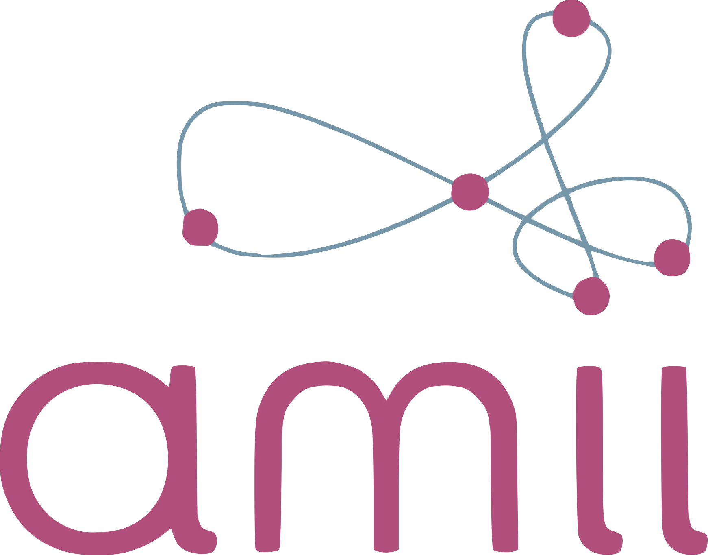
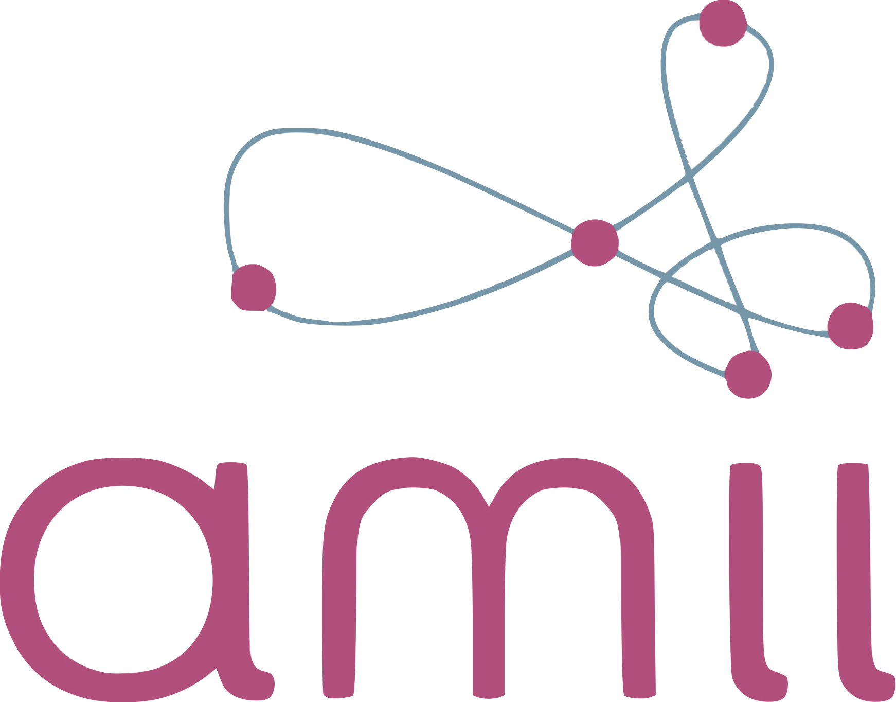

I am Shadan Golestan, a Machine Learning Scientist at Alberta Machine Intelligence Institute (Amii). Before joining Amii, I was a Postdoctoral Fellow working with Prof. Osmar Zaiane at the Computing Science department of the University of Alberta.
I obtained my PhD in computer science from in the same department under the supervision of Prof. Pierre Boulanger. I researched on Bayesian optimization and simulation methodologies for optimizing and evaluating smart indoor spaces.
The figure below shows the main themes of my research: 1: Domain Knowledge Integration via Data-driven Learning, 2: Learning Representations and Synthetic Dataset Generation, and 3: Decision-making Agents.
I focus on designing agents via Reinforcement Learning, Bayesian Optimization, and Large Language Models, to solve sequential decision-making problems, such as system optimization and machine/robot adaptation techniques in real-world applications.

 

golestan@ualberta.ca
golestan@amii.ca
Alberta Machine Intelligence Institute (Amii)
News
Apr 28, 2025- Our survey paper titled "The Evolving Landscape of LLM-and VLM-Integrated Reinforcement Learning" has been accepted at IJCAI 2025.
- I will be joining the Alberta Machine Intelligence Institute (Amii) as a Machine Learning Scientist.
- Our paper titled "Adaptive Iterative Feedback Prompting for Obstacle-Aware Path Planning via LLMs" has been accepted at LM4Plan at AAAI 2025.
- Our paper titled "Explainability of deep reinforcement learning algorithms in robotic domains by using Layer-wise Relevance Propagation" has been published on Engineering Applications of Artificial Intelligence.
- Our paper (with Omid Ardakanian and Pierre Boulanger) on a novel grey-box Bayesian optimization has been accepted at AAAI 2024.
- I will be joining the Computing Science department at the University of Alberta and Alberta Machine Intelligence Institute (Amii) as a Postdoctoral Fellow working with Professor Osmar Zaiane. I will research on Reinforcement Learning.
- I have successfully graduated from my PhD studies!